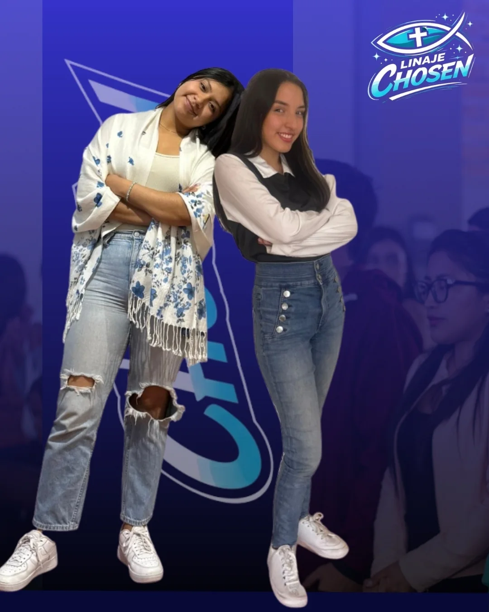

✦
✦
✧
✦
✧
CHOSEN
"Linaje escogido, real sacerdocio, nación santa."

"Linaje escogido, real sacerdocio, nación santa."

"Linaje escogido, real sacerdocio."
1 PEDRO 2:9
Chosen nace de la verdad más liberadora: fuimos elegidos por Dios antes de la fundación del mundo. No es un accidente que estés aquí. Hay un llamado sobre tu vida.
Somos un grupo apartado para Su luz, descubriendo juntas quiénes somos en Cristo.
Descripción completa, propósito y testimonios del grupo.
Aquí irán los nombres y una breve presentación de las líderes del grupo.
Collage con fotos del grupo reunido, retiros y momentos especiales.
Ven, conócenos un sábado y forma parte de esta familia.
Escríbenos en Instagram Ver otros grupos